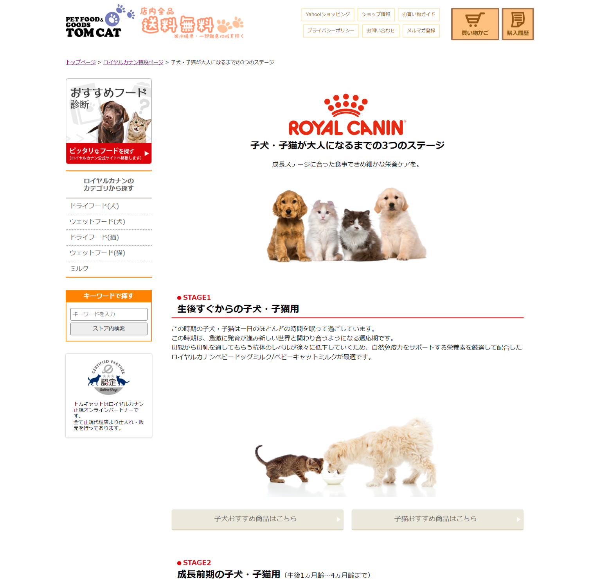

プロフィール 基本情報 名前渡辺知映子 出身・在住愛知県豊橋市 経歴 2012年3月愛知県立豊橋東高校 卒業 2016年3月愛知大学国際コミュニケーション学部 卒業 大学卒業後、Web制作に合計5年、医療事務に1年半従事 さらにプロフィールを見る 制作実績 Webコンテンツ制作 ECサイト内メーカー特設コンテンツ ECサイトレビュー機能実装 ペットフード特集ページ改修 自治体子育て支援特集ページ バナー・画像制作 制作バナー一覧